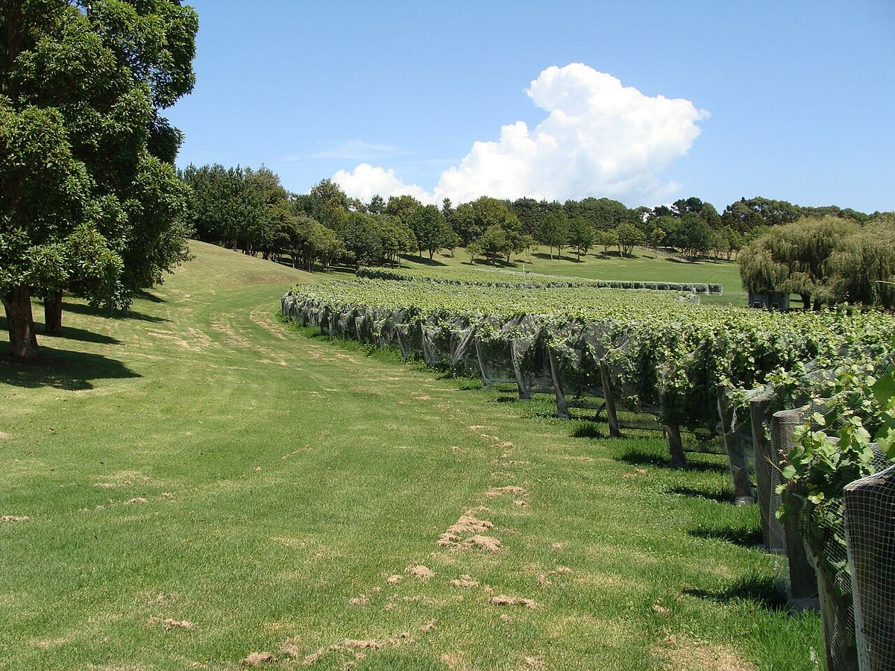

TINTO
Empresa fundada en 1961 en Auckland por George Fistonich, de origen dálmata, que se convirtió en uno de los mayores productores de Nueva Zelanda, con una presencia importante en Marlborough.

Villa Maria nació en 1961, cuando George Fistonich, hijo de inmigrantes dálmatas, arrendó un pequeño viñedo en Mangere, en el sur de Auckland, y empezó a elaborar vino a pequeña escala. Como muchas familias de origen croata asentadas en la zona, comenzó con una producción modesta, pero en las décadas siguientes la empresa creció hasta convertirse en uno de los grandes nombres del vino neozelandés. En reconocimiento a su contribución al sector, Fistonich recibió el título de sir.
Con el auge del Sauvignon Blanc, Villa Maria desarrolló una fuerte presencia en Marlborough, donde posee viñedos y una bodega, y también trabaja en Hawke's Bay, en particular en la zona de Gimblett Gravels, y en otras regiones. Su gama se organiza en varios niveles, como Private Bin, Cellar Selection, Reserve y vinos de viñedo único. Además de Sauvignon Blanc, elabora Pinot Noir, Chardonnay, Pinot Gris, Riesling y tintos de tipo bordelés y Syrah.
La empresa fue una de las primeras de Nueva Zelanda en adoptar de manera generalizada el tapón de rosca a comienzos de la década de 2000, una decisión que en su momento resultó muy debatida y que acabó siendo seguida por la mayor parte del sector. También ha impulsado programas de viticultura sostenible y ecológica. En 2021 la familia vendió la empresa, que pasó a manos de otro grupo vinícola neozelandés.